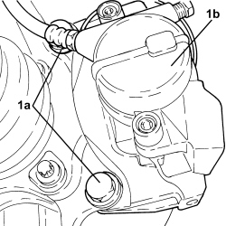
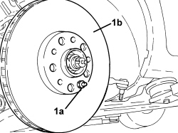
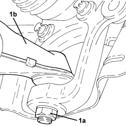
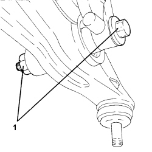
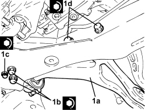
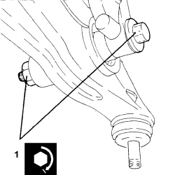
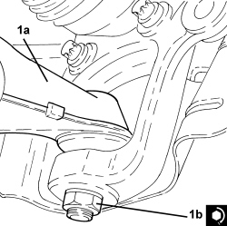
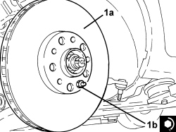
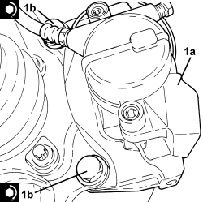

4410B40 LOWER TRACK CONTROL ARM (WITH BALLJOINT) FOR LEFT OR RIGHT FRONT SUSPENSION (ONE) - R+R - CHECK WHEEL GEOMETRY SEPARATELY
- Path
- Procedures > 44 SUSPENSION AND WHEELS > 4410 FRONT SUSPENSION > 4410B FRONT SUSPENSION TRACK CONTROL ARMS > 4410B40 LOWER TRACK CONTROL ARM (WITH BALLJOINT) FOR LEFT OR RIGHT FRONT SUSPENSION (ONE) - R+R - CHECK WHEEL GEOMETRY SEPARATELY
- Kind
- repair procedure (removal / refitting; the operation number is the code)
- Applies to
- all engines; all production periods
- Interactive page
- https://sloeber94.github.io/elrnDB-aBrrSpdr/en/#/946002198
Applies to: all engines; all production periods
 Removing
Removing
 Refitting
Refitting- Position the vehicle on a lift.
Op. 4450B02 LEFT FRONT WHEEL - R.R
Op. 7055B90 LEFT FRONT WHEEL ARCH LINER - R.R.
Op. 7055B54 UNDER ENGINE PROTECTION/GUARD - R.R.
1. Undo the bolts (1a) and move the brake caliper assemblies (1b) to the side and secure them appropriately.

Applies to: all engines; all production periods
1. Undo the nut fixing the steering rod to the front steering knuckle.
2. Disconnect the steering rod (2a) from the front steering knuckle using the tool (2b).

Applies to: all engines; all production periods
1. Undo the nut (1a) and disconnect the upper left track control arm for the front suspension (1b) from the steering knuckle (1c).

Applies to: all engines; all production periods
1. Undo the pin (1a) and remove the front brake disc (1b).

Applies to: all engines; all production periods
1. Unscrew the bolt (1a) and disconnect the lower wishbone (1b) from the steering knuckle.

Applies to: all engines; all production periods
1. Remove the left front wheel steering knuckle (1a) complete with driveshaft (1b).

Applies to: all engines; all production periods
1. Undo the bolt securing the lower fork connecting the front suspension damper to the lower wishbone, lower wishbone side.

Applies to: all engines; all production periods
1. Unscrew front bolts (1a), rear bolts (1b) and remove the front suspension lower wishbone assembly (1c).

Applies to: all engines; all production periods
Refitting
Removing1. Place the front suspension lower wishbone (1a) in its housing and secure it tightening the rear bolts (1b) and (1c) and the front bolts (1d) to the recommended torque.

Applies to: all engines; all production periods
1. Tighten the bolt securing the lower fork connecting the front suspension shock absorber to the lower wishbone, lower wishbone side to the specified torque.

Applies to: all engines; all production periods
- Place the left front wheel steering knuckle in its housing complete with driveshaft.
1. Connect the front suspension upper wishbone (1a) to the steering knuckle and tighten the nut (1b) to the recommended torque.

Applies to: all engines; all production periods
1. Position the front brake disc (1a) in its housing and secure it tightening the pin (1b) to the recommended torque.

Applies to: all engines; all production periods
1. Connect the front suspension upper wishbone (1a) to the steering knuckle (1b) and tighten the nut (1c) to the recommended torque.

Applies to: all engines; all production periods
1. Connect the steering rod (1a) to the front hub steering knuckle and tighten a new bolt (1b) to the specified torque.

Applies to: all engines; all production periods
1. Position the brake caliper bracket (1a) in its housing and secure it tightening the bolts (1b) to the recommended torque.

Applies to: all engines; all production periods
Op. 7055B90 LEFT FRONT WHEEL ARCH LINER - R.R.
Op. 4450B02 LEFT FRONT WHEEL - R.R
Op. 0010T41 MANUAL GEARBOX OIL CHECK LEVEL AND TOP UP IF NECESSARY
Op. 7055B54 UNDER ENGINE PROTECTION/GUARD - R.R.
- Remove the vehicle from the lift.
Topics linked from this page (4)
- 0010T41 MANUAL GEARBOX OIL CHECK LEVEL AND TOP UP IF NECESSARY
- 4450B02 LEFT FRONT WHEEL - R.R
- 7055B54 UNDER ENGINE PROTECTION/GUARD - R.R.
- 7055B90 LEFT FRONT WHEEL ARCH LINER - R.R.